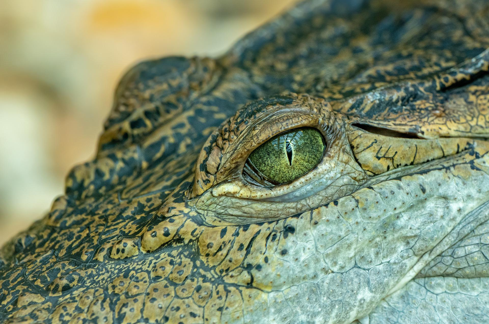

2 Ribu Spesies Reptil Terancam Punah, 50 Persen Buaya dalam Bahaya?!
Sebuah studi terbaru melaporkan 21 persen spesies reptil di Bumi atau sekitar 2.000 spesies terancam punah. Dari jumlah tersebut, 50 persen dari populasi buaya berada dalam bahaya kepunahan. Penelitian global ini dilakukan oleh International Union for Conservation of Nature (IUCN) dan melibatkan 52 peneliti dari seluruh dunia, termasuk para peneliti dari perguruan tinggi yang berbasis di Israel, Tel Aviv University dan Ben-Gurion University of the Negev. IUCN adalah badan internasional yang berperan menilai ancaman kepunahan dari berbagai spesies. Laporan tentang reptil sendiri telah dikerjakan selama 18 tahun terakhir dengan mengundang para ahli dan kelompok taksonomi dari seluruh dunia. Para peneliti telah melaporkan hasil studi komprehensif ini dalam jurnal Nature edisi April 2022.
Para ahli memprakirakan ada lebih dari 12 ribu spesies reptil di dunia. Berdasarkan temuan penelitian, 30 persen reptil yang hidup di hutan dan sekitar 14 persen reptil yang hidup di daerah kering terancam punah. Mereka juga menemukan, 58 persen dari populasi penyu dan 50 persen dari populasi buaya berada dalam bahaya kepunahan. Selain itu, para peneliti mengatakan, apabila 1.829 spesies kura-kura, buaya, kadal, dan ular yang telah ditemukan terancam punah di tahun-tahun mendatang, dunia akan kehilangan kekayaan kumulatif 15,6 miliar tahun evolusi.
Melansir Science Daily, Prof. Shai Meiri dari School of Zoology Tel Aviv University mengatakan, secara umum reptil di dunia berada dalam kondisi yang buruk. Bahkan, ia mengatakan, "Ini lebih buruk daripada burung dan mamalia, meskipun tidak seburuk amfibi." Sebagai peneliti yang banyak mempelajari tentang kura-kura, ia melihat kura-kura berada dalam posisi yang memprihatinkan daripada kadal dan ular. Para peneliti mengungkapkan, ancaman terbesar bagi reptil adalah kerusakan habitat mereka akibat alih fungsi hutan untuk lahan pertanian, penggundulan hutan, dan pembangunan perkotaan. Hanya sedikit ancaman yang diakibatkan oleh perburuan langsung. Meski demikian, para peneliti mengakui masih adanya keterbatasan dalam penelitian ini. Salah satunya kurangnya informasi tentang berbagai risiko yang dihadapi reptil, seperti perubahan iklim yang diprakirakan memiliki efek signifikan pada reptil.